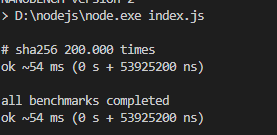

前言
总所周知前端生态圈开始使用原生语言进行开发工具链，而rust golang 这种可以编译成二进制可执行文件的原生语言十分一度成为开发者的选择。
而rust拥有非常高的性能的同时，并且保持这以往对于内存管理的一些问题的改进。
虽然其编译自身时间很长，但是编译后的结果运行起来的是相当快的。
第二方面，大多数人在看完rust 的文档后，通常会提出问题下一步应该做些什么。
也是这篇教程的目的之一。
总结上面的介绍，学完这个教程后你能得到什么？
- 编译器的一些概念和执行流程
- rust 基础知识的实践，生命周期，闭包，所有制，测试等
- 一个比postcss 解析语法树更快的解析器。
- 通过使用 wasm 进行浏览器端使用
postcss

我们的编译器

准备环境
安装 rust 环境
检测你的安装
rustc --version
cargo --version
创建你的项目
cargo init my-css
我们使用 cargo 创建了一个可以运行二进制的 bin 项目。
cargo 可以创建了很多类型的 cargo 包，常见的有 bin 、lib 类型的。
lib 类型的是提供给别人使用的
bin 类型的是可以通过命令行使用的
当然一个 cargo 的包可以即使 bin 类型的也是 lib 类型的。
你的项目目录应该是以下这样的
cd my-css
tree .
my-css
├── Cargo.toml
└── src
└── main.rs
创建测试目录
我们在开发过程中需要不断的进行测试，所以我们在项目下面创建 tests目录。
作为初学者我们最好在一开始应该遵循比较好的最佳实践，所以我们的目录结构按照这个目录进行 Package Layout
// tests/main.rs
#[test]
fn it_works() {
let result = 2 + 2;
assert_eq!(result, 4);
}
运行
cargo test
下一步
未来我们将围绕 css 语法草案进行我们的编写，所以我们可以提前熟悉下css完整的语法。
当然这两种语法厂商实现也不是特别规范，后面我们会一一讲解。
Appendix G. Grammar of CSS 2.2
编译常识
名词介绍
-
词法解析
将一段文本，分成多个词
-
语法解析
将词法赋予跟高层意义比如， - 在数字前面可能是符号，也可能是减法标识，通过优先级赋予不同含义，语法在编程语言里面通常分为两种类型，一种是语句，一种是表达式
-
语义分析
判断当前语法是否符合上下文环境，比如使用了变量 a 那么需要确定是否声明过变量 a，在 js 中 eslint 就是的某些能力就是做了语义分析。
语法分析
一般语法分析都是上下文无关语法分析。
比如下面js 代码
console.log(hello)
在语法上是合理的，但是语义上因为上下文中没有hello这个变量的声明所以不合法的。
语法分析主要分为两种
LR 类型的语法分析 一种是 ycc 为首的自下而上的分析法，还比如 codemirror 的 Lezer。 特点是有代码生成环节，具体没实现过不多过多介绍。
LL 类型的语法分析 特点是现实简单，比如 babel，swc，esbuild 都是使用的这种类型的
我们这里也会使用 LL(K) 进行实现。
编译器的主要流程如下
input -> lexer -> parse --> stringify
string -> token -> ast-tree -> string
从输入端的字符串开始解析词法，这是分析中的最小单位。
由多个或者单个词法组成具有含义的语法树节点。
由多个语法节点组合成语法树。
通过遍历语法树，转换生成对应的目标字符串。
以上就是编译器的全部流程，11/25 我完成了前三个代码实现，至于最后一个看下后面反响来做决定。
如果像对编译器推荐以下几本书
《自己动手实现Lua：虚拟机、编译器和标准库》 《编译原理（第2版）》
定位
确定当前词法，语法范围，帮助后面进行错误提醒,比如以下这种。
Line 3:8: 'React' is defined but never used
{{#include ../src/range.rs:range}}
这里通过 #[dirvie] 进行包裹的是 rust 的指令宏，这里简单介绍下 rust 的宏。
macro_rules! say_hello { (console.log("hello world")) => { println!("hello world"); }; } fn main(){ say_hello!(console.log("hello world")); }
点击左上角的运行按钮，你会发现这代码竟然能运行，我很简单的就实现了一个一个 js 解释器。
他的魔法在于在编译期将你的代码进行了替换，可以在 rust playground 中看下他的宏展开。
你会发现你的代码被替换成下面这种，这种编译器做的拦截对运行时毫无影响。
#![feature(prelude_import)]
#[prelude_import]
use std::prelude::rust_2021::*;
#[macro_use]
extern crate std;
macro_rules! say_hello {
(console.log("hello world")) => { println! ("hello world") ; } ;
}
fn main() {
{
::std::io::_print(::core::fmt::Arguments::new_v1(&["hello world\n"],
&[]));
};
;
}
相比于 js 的拦截器的实现高出很多。有点类似 svelte 的原理。
当然 rust 的宏并不是完美的，它带来的代价就是增加包体积，代码编译慢。
接下来，为Range添加 new 的创建方法
{{#include ../src/range.rs:impl}}
好啦本节就到此结束啦。
后面我们开始介绍词法解析器部分。
词法解析器
词法解析器主要的工作职责就是将文本最小粒度拆分。
实现的关键在于了解有限状态机。
是的，你没有看错，听到状态机最先想到的大概是正则表达式的实现吧。
词法解析器正式这个原理，甚至一些语法高亮框架就是基于正则去做的。
不过我们为了练手，不用一点正则，一点点手撸实现。
下面我们就开始词法解析器的旅程吧。
词法 Token 定义
首先我们来定义一下词法 token。
那么词法 token 哪里来呢？
从这篇文章中我们可以找到对于词法 token 的定义。
Appendix G. Grammar of CSS 2.2
// src/token.rs
{{#include ../src/token.rs:token}}
我们用元组结构体来表达 Token，它包含一个 TokenType 和一个范围 Range;
并且我们为 Token 实现了两个方法，一个是检测当前 Token 是否是传入的类型。
一个是通过原始字符串，获取当前 Token 字符。
接下来我们为我们第一个比较复杂的结构体创建测试 case;
// tests/test_token.rs
{{#include ../tests/test_token.rs}}
# 运行测试
cargo run test test_token
# output
running 2 tests
test test_token::check_token_type ... ok
test test_token::get_source_code ... ok
test result: ok. 2 passed; 0 failed; 0 ignored; 0 measured; 0 filtered out; finished in 0.00s
好了我们的方法符合预期的运行，与业务开发不同，这个教程会编写大部分测试 case，来保证最后能够在真实场景使用。
TokenType 定义
接下来我们使用一个枚举来定义我们这次使用的所有Token 类型。
// src/token_type.rs
{{#include ../src/token_type.rs:lexer_token_type}}
}
这部分比较简单就不一一介绍了。
接下来就是我们的词法解析器的实现了。
词法解析器开发
我们已经实现了 Range，Token。
这边我们直接进入正题，开始实现词法解析。
首先介绍一下词法解析起的运作流程了
由语法分析进行调用
获取token -> 是否匹配 --> 消费token
|
V
抛出异常
词法解析器的任务是找到一段文本中最小的文本结构，比如123 'abc' 分别是数字和字符串。
那么这些最小的文本结构，我们去哪找它的定义呢？
下面两个连接我们可以得到我们想要的。
Appendix G. Grammar of CSS 2.2
接下来开始我们的开发吧！
Lexer 结构与辅助功能
我们创建src/lexer.rs文件。
建立 lexer 的结构体
{{#include ../src/lexer.rs:lexer}}
这里有一个 rust 的新手常见的坑，或者说迷惑的地方，就是 String str &str 的关系，老实讲知道现在有时候我也很模糊。
我的理解如下
- str 是静态字符串，编译器存储在二进制文件中。
- String 属于动态字符串，存储在堆中。
- &str 是切片，或者说指针更好一些，他只是一个指向内存地址的指针
fn main() { let x = "i am str"; // "i am str" 这是str 存储在二进制中 // x 是指向 str 的指针，所以他的类型是 &str let y = String::from("string"); // 转化 y 到 &str let z = &y[..]; // z &str // z 是指向y的指针 }
这里的 chars 是 source_code 的切片，方便我们进行字符遍历。
后面我们会使用这个迭代器进行迭代，受益于 rust 的零成本抽象，他的性能非常高。
有了结构，接下来我们实现一些辅助函数，用来操作光标。
我们在某些场景下不仅仅需要感知当前字符，还需要感知下一个字符。
所以我们定义一下几个方法。
{{#include ../src/lexer.rs:handle_char}}
这段代码中存在几个问题，我们使用了关键字 pub 作为方法前缀，但是这些方法只对内使用，所以这是一个错误的用法。
第二，这部分我们应该使用缓存，存储上一次获得的结果，因为clone方法会影响性能。
// 思考：有没有什么更好的优化手段？
self.chars.clone().nth(0).map(|x| x.1)
{{#include ../src/lexer.rs:get_token}}
最后我们通过Lexer::new 创建 lexer 实例
{{#include ../src/lexer.rs:new}}
这里的advence相当开启了机器，词法解析器将不停的吞噬下一个字符，直到文本的最后。
接下来我们实现 lexer 的主要方法，Token 创建器。
为了限制篇幅，我只做 3 个介绍，剩下的大家可以看源码或者是课后作业，自行实现一遍，感受词法解析器的过程。
- 简单符号解析
'(' | ')' | ',' | ':' | ';' | '<' | '>' | '[' | '\\' | ']' | '{' | '}' | '=' => {
return self.parse_simple_symbol(ch)
}
//parse_simple_symbol
{{#include ../src/lexer.rs:parse_simple_symbol}}
首先我们通过 match 匹配当前字符串，这个语法就好像一个功能更加强大的switch语法,_=>{} 就相当于default。
最终返回，我们的元组结构体Token。
是不是很简单，接下来我们把难度提升一点，来实现Comment的解析。
- 解析 Comment
在 css 语法中只有一种注释，那就是/* */。
'/' => return self.try_comment(),
//try_comment
{{#include ../src/lexer.rs:try_comment}}
首先当当前字符匹配到/时候我们调用方法try_comment。
当下一个字符是*的时候，我们确认当前是一个注释，所以我们贪婪的获取下一个字符，指导遇见下一个*/。
如果下一个字符不是*时候，我们返回斜杠类型，这个 token 类型会在分析函数的时候使用比如calc(1px / 2px)。
实际上这里应该返回Option类型，但是如果全部都返回Option显得很繁琐，所以我这里就这报错了，Option提供两个枚举值，一个是Some<T>，一个是None，代表有值无值两种，从而比免了null的设计问题。
好的，限制我们开始渐入佳境，有没有感觉到，在这个案例中，通过if进行不同状态的匹配呢？
接下来，我们看一个更复杂的有限状态机数字类型。
- 数字类型解析
几乎所有的编程语言都拥有数字类型，实际上要写一个计算器的语法解析器也是十分复杂的。
我们来看下为什么数字类型这么复杂。

这是我们要实现的铁轨图。
digit 在 css 中比较简单代表0-9字符。
大家有兴趣可以看一下 lua 的数字类型的正则铁轨图十分复杂。
还记得我们在开头说的吗？词法解析器就是一个有限状态机的实现，所以虽然看起来很复杂，但是有了铁轨图的帮助，我们还是能顺利编写的。
ch if ch.is_ascii_digit() || ch == '.' || ch == '+' || ch == '-' => {
return self.parse_digit_token()
}
//try_digit
{{#include ../src/lexer.rs:try_digit}}
大家看最开始的匹配开始字符的语法，这是 match 守卫，可以在捕获变量后，添加一个 if 条件块进行进一步的确认。
首先，我们通过前瞻确认他到底是不是一个数字，如果不是我们就返回他的原始符号类型。
如果是我们便根据铁轨图的逻辑一步步吞噬 token，直到下一个 token 不在匹配。
测试我们的成果
接下来开始测试我们写的成果。
我们在测试目录tests下创建test_lexer.rs。
创建 mod
#[cfg(test)]
mod test_lexer {
}
为了方便测试我们使用宏来减少自己的模板代码。
//test_lexer
{{#include ../tests/test_lexer.rs:test_token}}
这段代码中，创建了lexer的实例，然后消费一个 token，最后检测消费的 token 是否是我们想要的类型。
//test_simple_symbol
{{#include ../tests/test_lexer.rs:lexer_test_example}}
好的，我们看我们的测试代码变得十分精简，这都是得益于 rust 的宏魔法。
最后我们来运行测试一下cargo test lexer。
running 21 tests
test test_lexer::test_all_match_token ... ok
test test_lexer::test_at_token ... ok
test test_lexer::test_complexe_url_token ... ok
大公告成，我们已经完成了我们的词法解析器啦，当然还有很多没有完成的词法，需要你自行探索有，代码最开始写的有问题也不要灰心哦，不断的实践才能让理论知识更加熟练，加油吧少年。
在下一部分，我们将会实现我们的语法解析部分，会涉及 ast 语法树哦，敬请期待。
语法解析器
上篇我们完成了词法解析器，本篇我们要继续完成我们的解析器的最后一部分，语法解析器，语法解析器长一点的名字叫上下文解析器，而和上下文有关的叫语义解析器，比如 eslint 的使用未定义的值。
ok，接下来继续开始我们的旅程吧。
语法树结构定义
我们将用一棵 ast tree 来表达语法结构。
比如 paser 下面的 css 规则，他的 ast 结构 json 表示是下面这样的。
.glyphicon-chevron-up:before {
content: "\e113";
}
{
"root": {
"node_type": "Stylesheet",
"range": { "start_pos": 13, "end_pos": 90 },
"children": [
{
"node_type": "RuleList",
"range": { "start_pos": 13, "end_pos": 90 },
"children": [
{
"node_type": "Selector",
"range": { "start_pos": 13, "end_pos": 41 },
"children": [
{
"node_type": "SimpleSelect",
"range": { "start_pos": 13, "end_pos": 41 },
"children": [
{
"node_type": "Class",
"range": { "start_pos": 13, "end_pos": 34 },
"children": [
{
"node_type": "Dot",
"range": { "start_pos": 13, "end_pos": 14 },
"children": null
},
{
"node_type": "IdentToken",
"range": { "start_pos": 14, "end_pos": 34 },
"children": null
}
]
},
{
"node_type": "Colon",
"range": { "start_pos": 34, "end_pos": 35 },
"children": null
},
{
"node_type": "IdentToken",
"range": { "start_pos": 35, "end_pos": 41 },
"children": null
}
]
}
]
},
{
"node_type": "DeclarationList",
"range": { "start_pos": 42, "end_pos": 90 },
"children": [
{
"node_type": "LeftCurlyBracket",
"range": { "start_pos": 42, "end_pos": 43 },
"children": null
},
{
"node_type": "Declaration",
"range": { "start_pos": 60, "end_pos": 76 },
"children": [
{
"node_type": "Property",
"range": { "start_pos": 60, "end_pos": 67 },
"children": [
{
"node_type": "IdentToken",
"range": { "start_pos": 60, "end_pos": 67 },
"children": null
}
]
},
{
"node_type": "Colon",
"range": { "start_pos": 67, "end_pos": 68 },
"children": null
},
{
"node_type": "Expression",
"range": { "start_pos": 69, "end_pos": 76 },
"children": [
{
"node_type": "Term",
"range": { "start_pos": 69, "end_pos": 76 },
"children": [
{
"node_type": "Str",
"range": { "start_pos": 69, "end_pos": 76 },
"children": null
}
]
}
]
}
]
},
{
"node_type": "RightCurlyBracket",
"range": { "start_pos": 89, "end_pos": 90 },
"children": null
}
]
}
]
}
]
}
}
那么为了表示这个结构，首先我们先创建一个 ast tree 的构造器。
{{#include ../src/ast.rs:ast_tree_builder}}
rust 归于树的构造和普通树的构造不一样,我们用Option枚举表达可以是空值，用Box将节点放在堆中而不是栈中。
{{#include ../src/ast.rs:ast_tree}}
{{#include ../src/ast.rs:ast_node_type}}
{{#include ../src/ast.rs:ast_node}}
接下来我们看一下如何操作这个 ast tree 操作这个 ast 树
{{#include ../src/ast.rs:impl}}
ok 最后一部就是 测试测试啦
{{#include ../tests/test_ast_tree.rs}}
running 2 tests
test test_ast_tree::test_travel ... ok
test test_ast_tree::test_name ... ok
词法解析器开发
语法解析器相对于词法解析器更加简单，他的困难在于语法定义，什么是语法定义呢？
一般通过 bnf 或 ebnf 来描述,不过 bnf 和 ebnf 并没有相对的规范，不过其表达的意义一般都差不多。
扩展巴科斯-瑙尔范式（EBNF, Extended Backus–Naur Form）是表达作为描述计算机编程语言和形式语言的正规方式的上下文无关文法的元语法(metalanguage)符号表示法。它是基本巴科斯范式(BNF)元语法符号表示法的一种扩展。
有兴趣的读者可以看这篇文章。
css 的 ebnf
Appendix G. Grammar of CSS 2.2
stylesheet
: [ CHARSET_SYM STRING ';' ]?
[S|CDO|CDC]* [ import [ CDO S* | CDC S* ]* ]*
[ [ ruleset | media | page ] [ CDO S* | CDC S* ]* ]*
;
import
: IMPORT_SYM S*
[STRING|URI] S* media_list? ';' S*
;
media
: MEDIA_SYM S* media_list '{' S* ruleset* '}' S*
;
media_list
: medium [ COMMA S* medium]*
;
medium
: IDENT S*
;
page
: PAGE_SYM S* pseudo_page?
'{' S* declaration? [ ';' S* declaration? ]* '}' S*
;
pseudo_page
: ':' IDENT S*
;
operator
: '/' S* | ',' S*
;
combinator
: '+' S*
| '>' S*
;
property
: IDENT S*
;
ruleset
: selector [ ',' S* selector ]*
'{' S* declaration? [ ';' S* declaration? ]* '}' S*
;
selector
: simple_selector [ combinator selector | S+ [ combinator? selector ]? ]?
;
simple_selector
: element_name [ HASH | class | attrib | pseudo ]*
| [ HASH | class | attrib | pseudo ]+
;
class
: '.' IDENT
;
element_name
: IDENT | '*'
;
attrib
: '[' S* IDENT S* [ [ '=' | INCLUDES | DASHMATCH ] S*
[ IDENT | STRING ] S* ]? ']'
;
pseudo
: ':' [ IDENT | FUNCTION S* [IDENT S*]? ')' ]
;
declaration
: property ':' S* expr prio?
;
prio
: IMPORTANT_SYM S*
;
expr
: term [ operator? term ]*
;
term
: [ NUMBER S* | PERCENTAGE S* | LENGTH S* | EMS S* | EXS S* | ANGLE S* |
TIME S* | FREQ S* ]
| STRING S* | IDENT S* | URI S* | hexcolor | function
;
function
: FUNCTION S* expr ')' S*
;
/*
* There is a constraint on the color that it must
* have either 3 or 6 hex-digits (i.e., [0-9a-fA-F])
* after the "#"; e.g., "#000" is OK, but "#abcd" is not.
*/
hexcolor
: HASH S*
;
首先是定义 parse 结构
{{#include ../src/parser.rs:parser}}
这里我们因为借用词法解析器，和 ast 构建器。
并且标记他们的生命周期'a
为了方便使用我们编写一些包裹 lexer 的方法。
{{#include ../src/parser.rs:lexer_wrapper}}
接下来是 parser 的入口函数
{{#include ../src/parser.rs:entry}}
这里对应的便是
stylesheet
: [ CHARSET_SYM STRING ';' ]?
[S|CDO|CDC]* [ import [ CDO S* | CDC S* ]* ]*
[ [ ruleset | media | page ] [ CDO S* | CDC S* ]* ]*
;
通过我们之前写的 ast tree 的代码，我们可以看出，我们只是对 ast 进行实现。
后面的也是一样的就不做过多介绍了。
最后还是测试测试
{{#include ../tests/test_parser.rs:exapmle}}
test tests::simple7_test ... ok
wasm 使用
rust 使用 wasm
具体教程可以看这篇文章https://rustwasm.github.io/docs/wasm-pack/
wasm-pack build --release --target web --out-dir tutorials/pkg
.gitignore
css_tutorial.d.ts
css_tutorial.js
css_tutorial_bg.js
css_tutorial_bg.wasm
css_tutorial_bg.wasm.d.ts
package.json
README.md
我们通过 script 引入下
<script type="module">import init, {parse} from "./pkg/css_tutorial.js"</script>
好啦我们的教程到此结束了，下次再见。